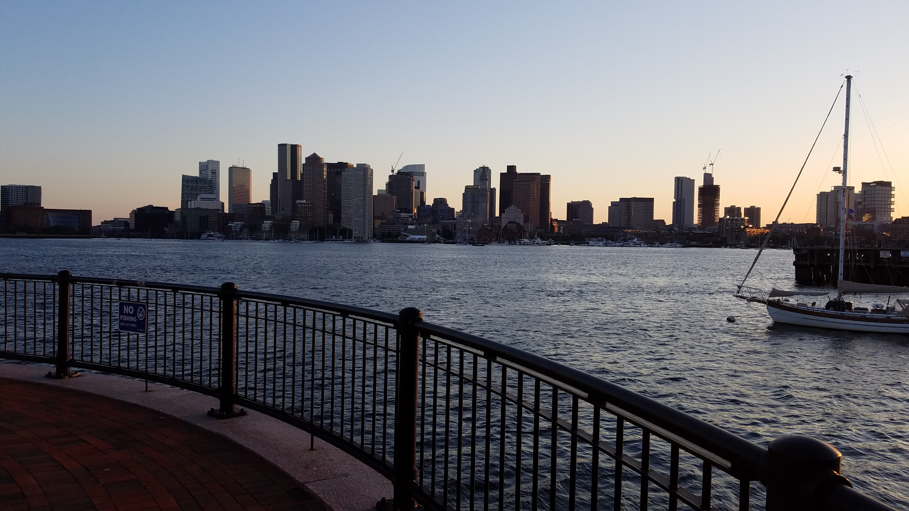
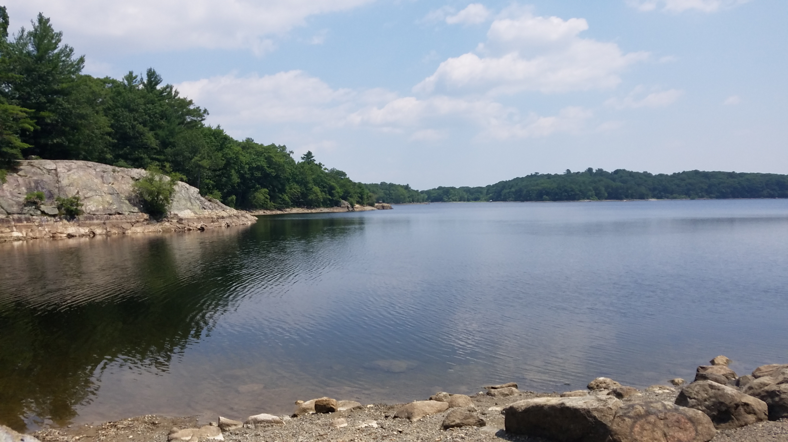
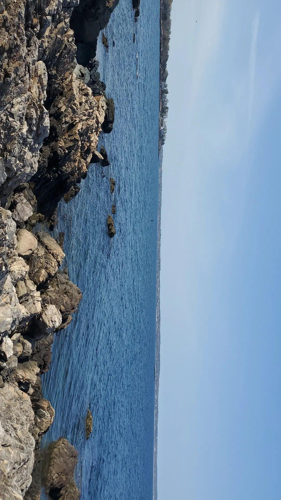

Hello my name is Amren Hossain and I am an Informatics major and Biology minor at Umass Amherst. I have an interst in cells and the human body along with a fasination for computers and technology. My goal for the future is to make healthcare more affordable and accessible to those in low income areas. Along with Biology, I also have an interest in nature and the outdoors. I enjoy spending time with my family and friends exploring different nooks and crannies of my city.
I also have a passion for taking pictures of the shoreline, here are some of my favorites:
- This is Piers Park in East Boston, it has a nice port which also has a beach, a park, and great scenery of the Boston area. Its the perfect place to spend time with your family and have a little picnic! 
- This is the pond at Lynn Woods, which is about a 30 minute walk from my house. There is a trail that leads to this pond and if your ever lost you can always ask one of the hikers on the path. They are eager to help! 
- This is Marblehead Neck in Marblehead. It in a very remite part of the town so you really have to drive around a bit before you find it. 
-
This is beach very close to house as well. I spent most of the summers in my childhood walking around the shoreline.